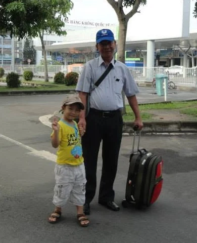

Questions worth exploring.
The observations, ideas, and experiences behind my curiosity about science.
From beautiful solutions to unanswered questions.
My grandfather has always been one of my most influential teachers. An accomplished mathematics educator who has mentored generations of talented students, he taught me to look beyond formulas and appreciate the elegance of a well-reasoned solution. During his summer visits, we would spend time exploring challenging problems together. Through him, I learned that mathematics was not simply about finding the right answer, but understanding why it worked.

As I grew older, however, I began noticing changes in him.
One summer, while he was staying with us, I noticed blood on the floor. My grandfather had injured himself without realizing it. I helped him find bandages for the wound, but what stayed with me was that he hadn’t even felt the injury.
I later asked my mother why his body was changing. The man who had once been so quick and capable was becoming less steady on his feet, less sensitive to pain, and less precise in movements that had once seemed effortless.
For the first time, I found myself wondering why our bodies age. What causes us to gradually lose abilities we once took for granted? Could humans somehow remain healthy throughout their lives?
These questions led me to begin exploring the structure of cells and the biological processes underlying life. I understood only a little at first, but the more I discovered, the more I realized how much remained unexplained. I hoped that studying biology more deeply would eventually help me find answers.
My grandfather taught me to appreciate beautiful solutions in mathematics. Years later, he inspired a different kind of curiosity—one that now draws me toward molecular biology, genetics, and the science of aging.
I hope to contribute to research that helps people not simply live longer, but remain healthy, independent, and able to do the things they love.